Assignment 3 Problem 2
Missile intercepting a stationary target with Pure Proportional Navigation.
Contents
Equations of Motion
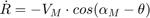
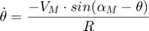
Solutions of all cases and data generation.
% Setup plot settings clear; set(groot, 'DefaultFigureVisible', 'off', 'DefaultFigureWindowStyle', 'normal', 'DefaultFigureWindowState', 'maximized'); plots.gains = [1, 2, 3]; plots.comp = 3; plots.numOfPlots = numel(plots.gains) * plots.comp; plots.fig = gobjects(plots.numOfPlots, 1); index = 1; runcase = 1; missdistance = cell(3, 1); impact_angles = cell(3, 1); % Setup problem conditions alM0 = deg2rad(60); Vm = 400; % m/s R0 = 5000; Th0 = deg2rad(0); initCond = [R0; Th0; alM0; 0; 0; R0 * cos(Th0); R0 * sin(Th0)]; simTime = [0, 50]; solverOptions = odeset('Event', @terminate_intgp2, 'AbsTol', 1.0e-8, 'RelTol', 1.0e-6, 'Refine', 5); for N = each(plots.gains) % 1.0) Solution of Equations of Motion [tsol, ysol, evT, evS, seq] = ode45(@(t, y) p2state(t, y, N, Vm), simTime, initCond, solverOptions); % Parameter calculations R = ysol(:, 1); Theta = ysol(:, 2); ThetaDeg = rad2deg(Theta); AlphaM = ysol(:, 3); ThetaDot = - Vm .* sin(AlphaM - Theta) ./ R; % 1.1) Vehicle Trajectories with LOS Shots plots.fig(index) = figure('Name', 'Trajectories', 'Color', 'White'); hold on; p1 = plot(ysol(:, 4), ysol(:, 5), 'r', 'LineWidth', 2); % Missile Trajectory: Xm and Ym p2 = plot(ysol(:, 6), ysol(:, 7), 'g', 'LineWidth', 2); % Target Trajectory: Xt and Yt % LOS shots p3 = line([ysol(1, 4), ysol(1, 6)], [ysol(1, 5), ysol(1, 7)], 'Color', 'blue', 'LineStyle', ':', 'Marker', '.', 'MarkerEdgeColor', 'blue', 'MarkerFaceColor', 'none'); for iter = 1:length(ysol(:, 3)) if(mod(iter, 10) == 0) line([ysol(iter, 4), ysol(iter, 6)], [ysol(iter, 5), ysol(iter, 7)], 'Color', 'blue', 'LineStyle', ':','Marker', '.', 'MarkerEdgeColor', 'blue', 'MarkerFaceColor', 'none'); end end hold off; xlabel('X-axis distance in metres'); ylabel('Y-axis distance in metres'); ylim([0, 1.1 * max(ysol(:, 5))]); legend([p1, p2, p3], {'Missile Trajectory', 'Target Trajectory', 'Line-Of-Sight'}, 'Location', 'northwest'); grid on; grid minor; % 1.2) Lateral Acceleration profile plots.fig(index + 1) = figure('Name', 'Am', 'Color', 'White'); axes('Units', 'normalized', 'Position', [0.04 0.070 0.88 0.88]); Am = N .* Vm .* ThetaDot; % lateral acceleration plot(tsol(:), Am(:)); xlabel('Time instant of engagement (sec)'); ylabel('Magnitude of Lateral Acceleration $(m/s^2)$'); % 1.3) Parameter Variations % Plot results plots.fig(index + 2) = figure('Name', 'Results', 'Color', 'White'); axes('Units', 'normalized', 'Position', [0.040 0.040 0.95 0.95]); subplot(3, 2, 1); plot(tsol, R); xlabel('Time in sec'); ylabel('metres'); title('LOS Separation R', 'Interpreter', 'latex'); grid on; grid minor; subplot(3, 2, 2); plot(tsol, rad2deg(AlphaM)); xlabel('Time in sec'); ylabel('degrees'); title('Missile Heading $\alpha_M$', 'Interpreter', 'latex'); grid on; grid minor; subplot(3, 2, 3); plot(tsol, rad2deg(Theta)); xlabel('Time in sec'); ylabel('degrees'); title('LOS Angle $\theta$', 'Interpreter', 'latex'); grid on; grid minor; subplot(3, 2, 4); plot(tsol, rad2deg(ThetaDot)); xlabel('Time in sec'); ylabel('degrees/sec'); title('LOS Anglular Rate $\dot{\theta}$', 'Interpreter', 'latex'); grid on; grid minor; subplot(3, 2, 5); plot(tsol, rad2deg(AlphaM - Theta)); xlabel('Time in sec'); ylabel('degrees'); ytickformat('%.1f') title('Look Angle/Heading Error $\sigma$', 'Interpreter', 'latex'); grid on; grid minor; % 1.5) Miss Distance missdistance{runcase} = sprintf('\n\tMiss Distance: %4.3f metres\n\n', min(R)); % 1.6) Impact Angle angleMag = abs(rad2deg(Theta(end))); if min(R) > 10 angleMag = NaN; end impact_angles{runcase} = sprintf('\n\tImpact Angle: %4.3f degrees\n\n', angleMag); % Increment plot index index = index + 3; runcase = runcase + 1; end
Plots of all cases
Case 1: N = 1
fprintf(missdistance{1});
fprintf(impact_angles{1});
index = 1;
plots.fig(index).Visible = 'on';
plots.fig(index + 1).Visible = 'on';
plots.fig(index + 2).Visible = 'on';
snapnow;
index = index + 3;
Miss Distance: 815.168 metres Impact Angle: NaN degrees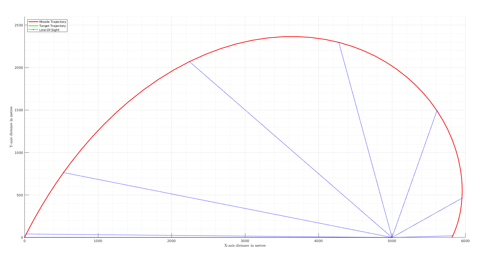 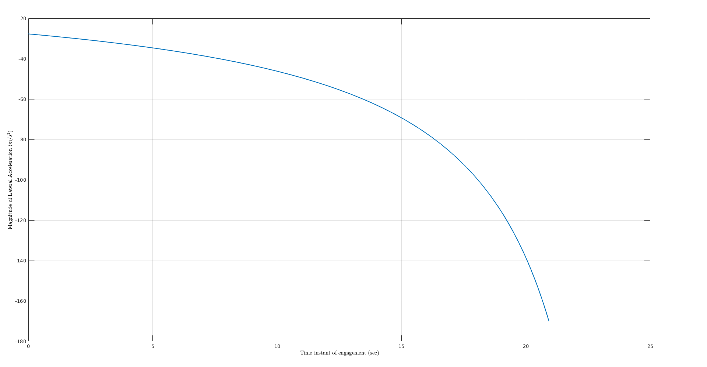 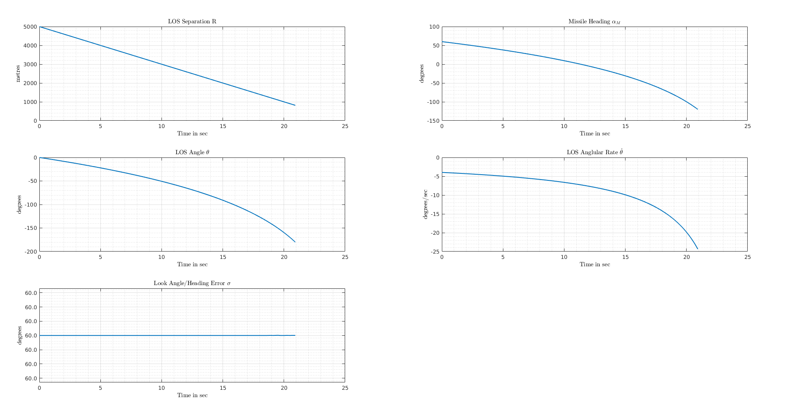
Case 2: N = 2
fprintf(missdistance{2});
fprintf(impact_angles{2});
plots.fig(index).Visible = 'on';
plots.fig(index + 1).Visible = 'on';
plots.fig(index + 2).Visible = 'on';
snapnow;
index = index + 3;
Miss Distance: 0.100 metres Impact Angle: 59.999 degrees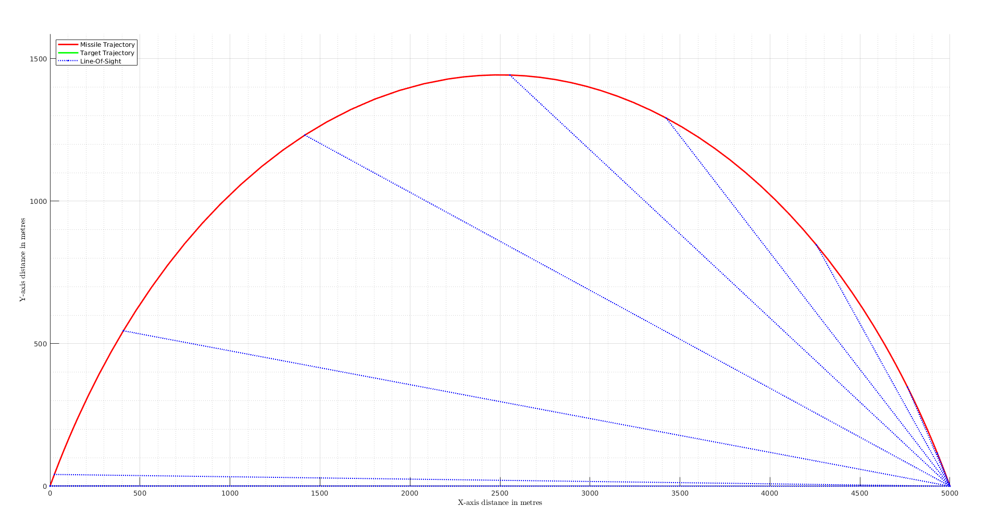 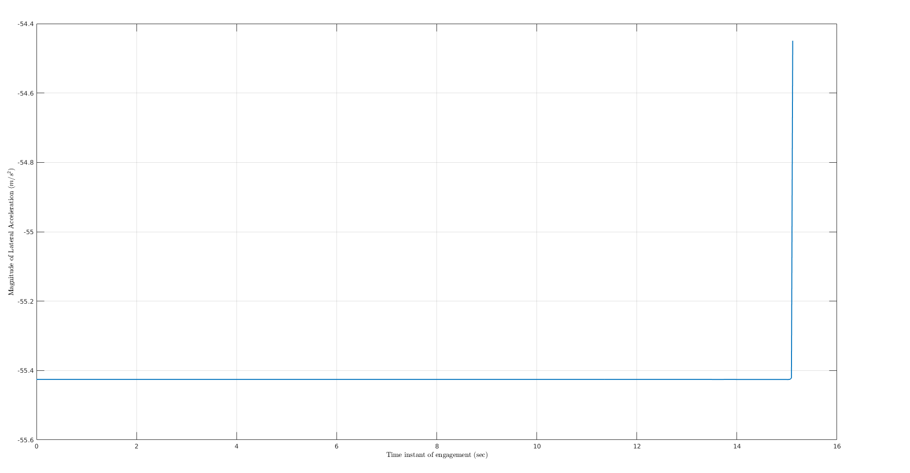 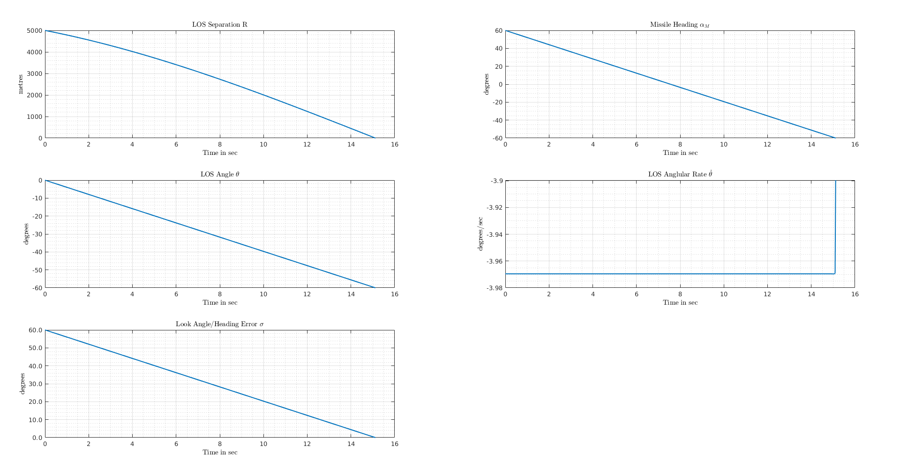
Case 3: N = 3
fprintf(missdistance{3});
fprintf(impact_angles{3});
plots.fig(index).Visible = 'on';
plots.fig(index + 1).Visible = 'on';
plots.fig(index + 2).Visible = 'on';
snapnow;
index = index + 3;
Miss Distance: 0.100 metres Impact Angle: 30.000 degrees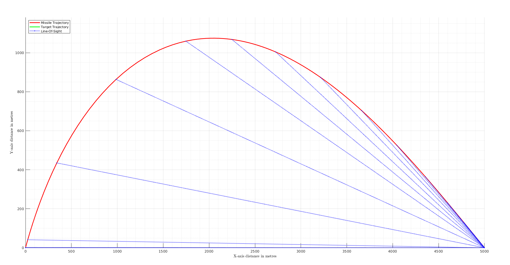 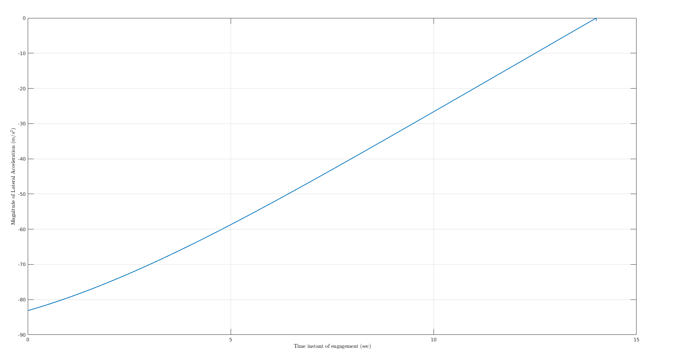 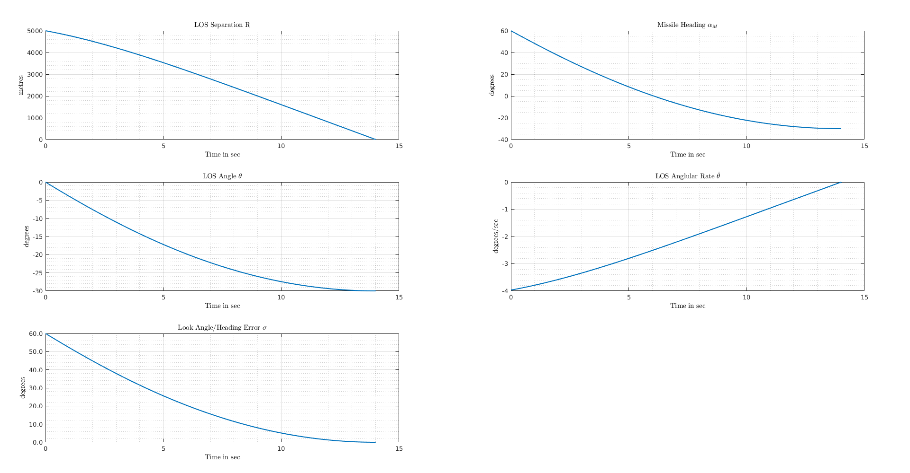
Perform Cleanup Tasks
close all; clear; set(groot, 'DefaultFigureVisible', 'on');